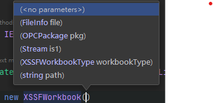
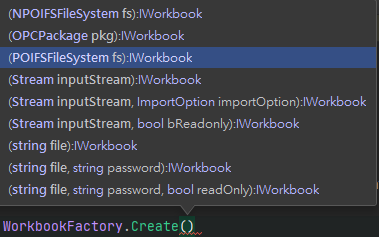
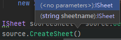
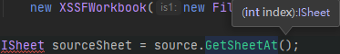

這篇文章主要是為了記錄使用 NPOI 的方法及踩坑經驗，更細節還是請移步官網
NPOI 的安裝 使用nuget搜尋NPOI套件並安裝即可，做完這件事情後查看專案檔，可以看到他一共安裝三個套件
1 2 3 4 <package id ="NPOI" version ="2.5.1" targetFramework ="net452" /> <package id ="Portable.BouncyCastle" version ="1.8.6" targetFramework ="net452" /> <package id ="SharpZipLib" version ="1.2.0" targetFramework ="net452" />
如何開始 Quick Start 通常我們使用 NPOI 的步驟大概會是這個樣子
建立 EXCEL 檔案：從概念上講就是先建立一個工作本(WorkBook) 建立工作表：這個就是工作本裡面的某一頁(Sheet) 設定儲存格資料：沒甚麼好講的，就是每一頁面底下的儲存格 建立 EXCEL 檔案 因為 EXCEL 版本的關係，官方提供兩個類別來建立工作表
版本 副檔名 類別 Excel 2003 xls HSSFWorkBook Excel 2007 xlsx XSSFWorkbook

從 IDE 的提示可以看到建構式允許輸入串流、FileInfo 或是檔案路徑等等，當然也可以不輸入，就是新建一個 EXCEL 檔案
1 IWorkbook target = new XSSFWorkbook();
在搜尋NPOI用法的時候，有看到另外一個工廠方法，但是最終我並沒有使用這個方法，而是直接寫死，用XSSFWorkbook，因為需求僅需要使用xlsx

建立工作表 應該說這個步驟，要看檔案當下有沒有工作表，沒有的話需要建立；有的話只需要取得，然後存到變數供後續流程使用


設定儲存格 遵循著工作表的概念，此處也是需要新建或是取得的概念，使用列(ROW)及儲存格(Cell)
1 2 3 4 5 6 IWorkbook workbook = new XSSFWorkbook(); ISheet workSheet = workbook.CreateSheet("工作表1" ); IRow row = workSheet.CreateRow(0 ); ICell cell1 = row.CreateCell(0 ); cell1.SetCellValue("column 1" );
下載檔案 當我們準備好一個 EXCEL 檔案要匯出，給網站使用者下載，我們可以透過memoryStream將 EXCEL 放到裡面，網路上的做法很多都是用Response.BinaryWrite(exportData.GetBuffer());這樣的方法去做，但是在MVC裡面我們可以直接使用FileResult回傳即可
1 return File(ms.ToArray(), System.Net.Mime.MediaTypeNames.Application.Octet, fileName);
注意事項 在NPOI裡面可以發現是沒有日期型態的，從實際的 EXCEL 檔案讀取，它的型態會被判斷為數字，必須再透過DateUtil.IsCellDateFormatted方法來判斷是否為日期
應用範例：網站下載 Excel 前端 前端的部分核心代碼大概就是下面這段了，透過ajax送出請求，接收到結果之後再建立一個 a 標籤，模擬使用者點擊達到自動下載的效果
1 2 3 4 5 6 7 8 9 10 11 12 13 14 15 16 17 18 19 20 21 22 23 24 downloadExcel(sendData){ return $.ajax({ url: `/Demo/DownloadExcel` , type: "POST" , data: sendData, xhrFields: { responseType: "blob" } }) } downloadHandler(){ downloadExcel(condition).then((response, status, hr ) => { const $a = document .createElement("a" ); const url = URL.createObjectURL(response); const fileName = xhr.getResponseHeader('Content-Disposition' ).split("=" )[1 ]; const currentFileName = fileName.replace(/"(.*)"/ , "$1" ); $a.download = decodeURI (currentFileName); $a.href = url; $a.click(); setTimeout(() =>5000 ) }) }
後端 核心代碼是改寫自[.NET][C#]NPOI 產生 Excel 報表(一)列印表頭資訊(xlsx) ，這份程式的優點是允許接受泛型輸入來產生 EXCEL 檔案，所以 EXCEL 欄位的順序會與輸入的泛型屬性順序相關 ，但是若直接依照原文的方法產生出來的 EXCEL，再開啟的時候會提示錯誤NPOI 已移除的記錄: /xl/workbook.xml 部分的 文件佈景主題 (活頁簿) ，研究了很久始終沒有頭緒，最終的解決方案是參考官網範例：CopySheet(複製工作表) ，改寫後就正常了。
順便查到其實xlsx檔案就是zip檔案，可以解壓，修改內容後再壓回zip也行，不過正常人還是不要用這招，因為後續你也不能做什麼有用的事情
1 2 3 4 5 6 7 8 9 10 11 12 13 14 15 16 17 public FileResult DownloadExcel ( List<ExcelInfo> excelData = GetMyExcelData(); string templatePath = Server.MapPath("~/App_Data/templateOrderQA.xlsx" ); IWorkbook workbook = new ExcelModule().GenerateExcel(templatePath, excelData, 1 ); MemoryStream ms = new MemoryStream(); workbook.Write(ms); var fileName = HttpUtility.UrlEncode($"匯出資料{DateTime.Now:yyyy-MM-dd_HHmmss} .xlsx" , System.Text.Encoding.UTF8); return File(ms.ToArray(), System.Net.Mime.MediaTypeNames.Application.Octet, fileName); }
1 2 3 4 5 6 7 8 9 10 11 12 13 14 15 16 17 18 19 20 21 22 23 24 25 26 27 28 29 30 31 32 33 34 35 36 37 38 39 40 41 42 43 44 45 46 47 48 49 50 51 52 53 54 55 56 57 58 59 public class ExcelModule { public IWorkbook GenerateExcel<T>(string templatePath, List<T> entities, int offset) { IWorkbook target = new XSSFWorkbook(); IWorkbook source = new XSSFWorkbook(new FileStream(templatePath, FileMode.Open, FileAccess.Read, FileShare.ReadWrite)); ISheet sourceSheet = source.GetSheetAt(0 ); sourceSheet.CopyTo(target, sourceSheet.SheetName, true , true ); ISheet targetSheet = target.GetSheetAt(0 ); List<ICell> templateCells = targetSheet.GetRow(offset).Cells; PropertyInfo[] properties = typeof (T).GetProperties(); foreach (var entity in entities) { targetSheet.CreateRow(offset); int cellInRow = 0 ; foreach (var property in properties) { ICell cell = targetSheet.GetRow(offset).CreateCell(cellInRow); cell.CellStyle = templateCells[cellInRow].CellStyle; cell.SetCellType(templateCells[cellInRow].CellType); var currentValue = property.GetValue(entity, null ); switch (templateCells[cellInRow].CellType) { case CellType.Numeric: if (currentValue == null ) break ; if (DateUtil.IsCellDateFormatted(templateCells[cellInRow])) { cell.SetCellValue(Convert.ToDateTime(currentValue)); } else { cell.SetCellValue(Convert.ToDouble(currentValue)); } break ; case CellType.String: cell.SetCellValue(Convert.ToString(currentValue)); break ; default : cell.SetCellValue(Convert.ToString(currentValue)); break ; } cellInRow++; } offset++; } return target; } }
測試 這裡的測試一樣是改寫自[.NET][C#]NPOI 產生 Excel 報表(一)列印表頭資訊(xlsx) ，但這個測試應該不算是單元測試，充其量只能是用來測試看看我們的模組是否可以順利產生 Excel 檔案，所以測試功能正常後，應該還是把它砍掉，專案會比較乾淨
1 2 3 4 5 6 7 8 9 10 11 12 13 14 15 16 17 18 19 20 21 22 23 24 25 26 27 28 29 30 31 32 33 34 35 36 37 38 39 40 41 [TestClass ] public class ExcelModuleTests { [TestMethod ] public void GenerateExcelFileTest ( List<Poker> pokers = new List<Poker>(); for (int i = 0 ; i < 10 ; i++) { pokers.Add(new Poker {Id = 1 , Name = "David" , Title = "King" , Color = "Spades" , Balance = 1000 }); pokers.Add(new Poker {Id = 2 , Name = "Charlemagne" , Title = "King" , Color = "Hearts" , Balance = 2000 }); pokers.Add(new Poker {Id = 3 , Name = "Caesar" , Title = "King" , Color = "Diamonds" , Balance = 3000 }); pokers.Add(new Poker {Id = 4 , Name = "Alexander" , Title = "King" , Color = "Clubs" , Balance = 4000 }); pokers.Add(new Poker {Id = 5 , Name = "Athena" , Title = "Queen" , Color = "Spades" , Balance = 5000 }); pokers.Add(new Poker {Id = 6 , Name = "Judith" , Title = "Queen" , Color = "Hearts" , Balance = 6000 }); pokers.Add(new Poker {Id = 7 , Name = "Rachel" , Title = "Queen" , Color = "Diamonds" , Balance = 7000 }); pokers.Add(new Poker {Id = 8 , Name = "Argine" , Title = "Queen" , Color = "Clubs" , Balance = 8000 }); } string templateFile = @"TestHelper\myTemplate.xlsx" ; string ReportPath = @"D:\temp\output.xlsx" ; var sut = new ExcelModule(); IWorkbook workbook = sut.GenerateExcel(templateFile, pokers, 1 ); using (FileStream fileOut = new FileStream(ReportPath, FileMode.Create)) { workbook.Write(fileOut); } Assert.AreEqual(true , File.Exists(ReportPath)); } } public class Poker { public int Id { get ; set ; } public string Name { get ; set ; } public string Title { get ; set ; } public string Color { get ; set ; } public Decimal Balance { get ; set ; } }
結論 NPOI 的使用其實沒有想像中困難，只是麻煩一點而已，而儲存格的樣式設定則是另外一個討人厭的事情，透過 Template 的方式可以省去很多工，但如果要客製許多樣式還是需要慢慢手刻，不過若以基本的檔案匯出功能來看，到這邊應該就差不多了